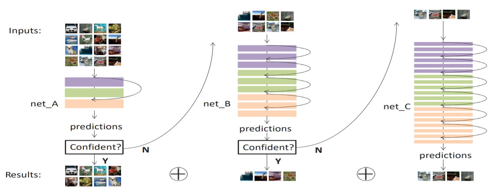

Wu Zheng[郑武]
Ph.D. Student |
About Me
I am currently a final-year Ph.D. student in the Department of Computer Science and Engineering, The Chinese University of Hong Kong (CUHK), supervised by Prof. Chi-Wing Fu. Before that, I received my Bachelor's degree from the Department of Automation, Tsinghua University, and my Master's degree from the Institute of Automation, Chinese Academy of Sciences (CASIA).
My research interests focus on computer vision and pattern recognition, especially the 3D object detection and scene understanding in autonomous driving scenarios.
News
- [06/2022] One paper was accepted by ACM MM 2022.
- [03/2022] One paper was accepted by CVPR 2022 as Oral.
Publications
|
[SMF-SSD:]
Boosting Single-Frame 3D Object Detection by Simulating Multi-Frame Point Clouds
Wu Zheng, Li Jiang, Fanbin Lu, Yangyang Ye, Chi-Wing Fu ACM International Conference on Multimedia (ACM MM), 2022. [PDF] [Res] |

|
[S2M2-SSD:]
Boosting 3D Object Detection by Simulating Multimodality on Point Clouds
Wu Zheng, Mingxuan Hong, Li Jiang, Chi-Wing Fu IEEE Conference on Computer Vision and Pattern Recognition (CVPR), Oral, 2022. [PDF] [Res] |

|
SE-SSD: Self-Ensembling Single-Stage Object Detector From Point Cloud
Wu Zheng, Weiliang Tang, Li Jiang, Chi-Wing Fu IEEE Conference on Computer Vision and Pattern Recognition (CVPR), 2021. [PDF] [Code] 
Ranking 1st/2nd place on KITTI BEV/3D object detection benchmark (Car, Nov 2020 - May 2021). |

|
CIA-SSD: Confident IoU-Aware Single-Stage Object Detector From Point Cloud
Wu Zheng, Weiliang Tang, Sijin Chen, Li Jiang, Chi-Wing Fu Association for the Advancement of Artificial Intelligence (AAAI), 2021. [PDF] [Code] 
|
|
Relational Network for Skeleton-based Action Recognition
Wu Zheng, Lin Li, Zhaoxiang Zhang, Yan Huang, Liang Wang IEEE International Conference on Multimedia and Expo (ICME), Oral, 2019. [PDF] |

|
Weakly-Supervised Object Localization by Cutting Background with Deep Reinforcement Learning
Wu Zheng, Zhaoxiang Zhang Pacific Rim International Conference on Artificial Intelligence (PRICAI), 2018. [PDF] |
|  |
Accelerating the Classification of Very Deep Convolutional Network by A Cascading Approach
Wu Zheng, Zhaoxiang Zhang International Conference on Pattern Recognition (ICPR), 2018. [PDF] |
Supervision
-
Student Helper (ongoing): Yuxuan Wan, Shenghao Zhang
Student Helper (done): Chen Tianhao, Hong Mingxuan
Final Year Project (done): Tang Weiliang
Summer Internship (done): Tang Weiliang, Chen Sijin (Best Project Award from Engineering Faculty)
Professional Activities
-
Invited Talks:
For Autonomous Driving: Single-Stage 3D Object Detection From Point Cloud - ZhiDongXi [video&slides]
3D Detection From Point Cloud: CIA-SSD - SFFAI 97th Issue [video&slides]
-
Reviews:
CVPR'21&22, ECCV'22, ICCV'21, ICPR'22, Neurocomputing